MIPS style CPU implemented in verilog, with 3 pipeline stages and interrupt handling. Based on the Hennessy & Patterson description.
There are 3 pipeline stages, fetch-decode, execute and memory-writeback.
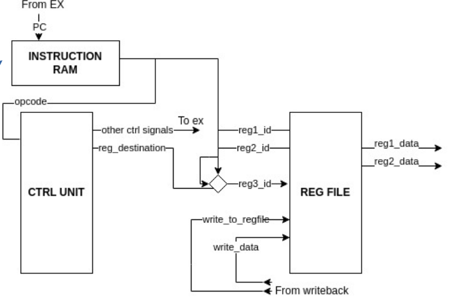
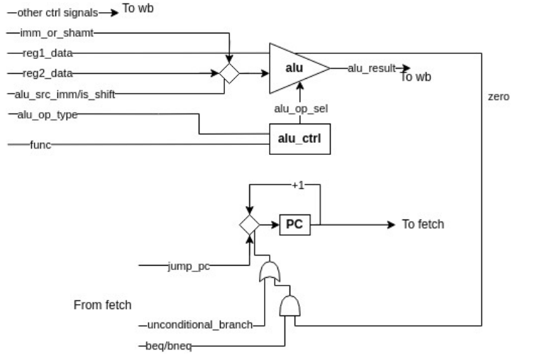
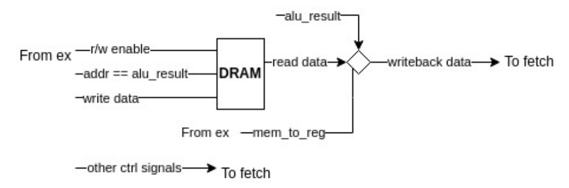
Finally, the interrupt mechanism is controlled by the following FSM
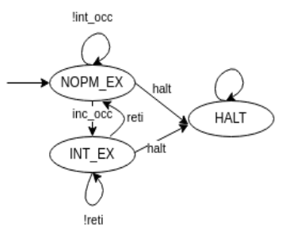
Obviously the verilog code is quite big so let's see only some of the important stuff.
/*
* @brief Register file implementation
* @input clk The writing is clk triggered
* @input read_reg_id1, read_reg_id2 The registers to read values from
* @input write_reg_id The register to possibly write to
* @input write_reg_flag Whether to write to a register or not
* @input write_reg_data The data to possible write
* @input reg1_data, reg2_data The output data of 2 read registers
*/
module REG_FILE(
input clk,
input rst,
input [4:0] read_reg_id1, read_reg_id2, write_reg_id,
input write_reg_enable,
input [31:0] write_reg_data,
output reg [31:0] reg1_data, reg2_data
);
reg [31:0] registers [0:31]; // 32 registers of 32 bits
reg [5:0] i;
always @(*) begin
reg1_data = registers[read_reg_id1];
reg2_data = registers[read_reg_id2];
end
always @(posedge clk or posedge rst) begin
if (rst) begin
for (i = 0; i <= 31; i = i+1) begin
registers[i] = 'b0;
end
end
else if (write_reg_enable) begin
registers[write_reg_id] <= write_reg_data;
end
end
endmodule
/*
* brief ALU implementation
* @input a, b 32bit values to be used in operation
* @input alu_sel Specifies the operation to be performed
* @ouput result ALU output
*/
module ALU(
input [3:0] alu_sel,
input [31:0] a, b,
output reg zero,
output reg [31:0] result
);
always @(*) begin
if (alu_sel == 'b0000) begin // add
result = a + b;
zero = 0;
end
else if (alu_sel == 'b0001) begin // sub
result = a - b;
zero = (result == 0);
end
else if (alu_sel == 'b0010) begin // mul
result = a * b;
zero = 0;
end
else if (alu_sel == 'b0011) begin // div
result = a / b;
zero = 0;
end
else if (alu_sel == 'b0100) begin // and
result = a & b;
zero = 0;
end
else if (alu_sel == 'b0101) begin // or
result = a | b;
zero = 0;
end
else if (alu_sel == 'b0110) begin // nor
result = ~(a | b);
zero = 0;
end
else if (alu_sel == 'b0111) begin // shift left
result = a << b;
zero = 0;
end
else if (alu_sel == 'b1000) begin // shift right
result = a >> b;
zero = 0;
end
else begin
result = 0;
zero = 0;
end
end
endmodule
/*
* @brief Fetch-Decode stage
* interrupt protocol:
* check if available_for_int == 1, otherwise the interrupt will be ignored
* write to the int_pc register the PC of the interrupt code to be executed
* set int_occured = 1 for one cycle then set to 0
* interrupt code needs to include a reti instruction
*
* on int_occured:
save PC to a register
create and issue a jump instruction to the int_pc
*
* special opcodes: b11111111111111111111111111111111 == nop
* b11111111111111111111111111111110 == halt
* b11111111111111111111111111111101 == reti
*/
module FETCH_DEC(
input clk, rst,
input int_occured,
input [9:0] int_pc,
output reg available_for_int,
input write_to_regfile_from_wb,
input [31:0] write_data_from_wb,
input [4:0] writeback_reg_id_from_wb,
input [9:0] PC_from_ex,
output reg [15:0] imm_or_shamt_data,
output reg [5:0] func_field,
output reg [15:0] jump_offset,
output [31:0] reg1_data, reg2_data,
output [1:0] alu_op_type_to_ex,
output is_shift_to_ex,
output write_to_regfile_to_ex,
output alu_src_imm_to_ex,
output mem_write_to_ex, mem_read_to_ex,
output mem_to_reg_to_ex,
output beq_to_ex, bneq_to_ex,
output reg [4:0] writeback_reg_id_to_ex,
output uc_b_to_ex
);
parameter CPU_NORM_EX = 0;
parameter CPU_INT_EX = 1;
parameter CPU_HALT = 2;
parameter NOP_OPCODE = 'b11111111111111111111111111111111;
parameter HALT_OPCODE = 'b11111111111111111111111111111110;
parameter RETI_OPCODE = 'b11111111111111111111111111111101;
// internal control stuff
wire reg_destination;
reg [9:0] SPC; // saved pc from interrupt
reg [31:0] current_inst; // instruction to be execued, can change based on halt and interrupt
// 0 = normal execution (can accept interrupt), 1 = executing and interrupt, 2 = halted execution
reg [1:0] cpu_state, next_cpu_state;
// iram wires
wire [31:0] inst_from_iram;
wire [31:0] dummy;
// reg file wires
wire [4:0] reg1_id = current_inst[25:21];
wire [4:0] reg2_id = current_inst[20:16];
wire [4:0] reg3_id = writeback_reg_id_from_wb;
assign is_shift_to_ex = (alu_op_type_to_ex == 'b10 && (current_inst[5:0] == 'b000000 || current_inst[5:0] == 'b000010));
always @(posedge clk or posedge rst) begin
if (rst) begin
cpu_state <= CPU_NORM_EX;
next_cpu_state <= CPU_NORM_EX;
end
else begin
cpu_state <= next_cpu_state;
end
end
// stage logic
always @(*) begin
// if current and next state is normal execution then the cpu is available for int
available_for_int = (cpu_state == CPU_NORM_EX && next_cpu_state == CPU_NORM_EX);
if (cpu_state == CPU_NORM_EX) begin // normal execution
if (inst_from_iram == HALT_OPCODE) begin // is halt
next_cpu_state = CPU_HALT;
end
else if (int_occured) begin
next_cpu_state = CPU_INT_EX;
SPC = PC_from_ex;
current_inst = { 'b0001100000000000000000, int_pc[9:0] }; // unconditional branch to int_pc
end
else begin // keep executing normally
next_cpu_state = CPU_NORM_EX;
current_inst = inst_from_iram;
end
end
else if (cpu_state == CPU_INT_EX) begin // interrupt execution
if (inst_from_iram == HALT_OPCODE) begin // is halt
next_cpu_state = CPU_HALT;
end
else if (inst_from_iram == RETI_OPCODE) begin // is reti
next_cpu_state = CPU_NORM_EX;
current_inst = { 'b0001100000000000000000, SPC[9:0] };
end
else begin // keep executing the interrupt
next_cpu_state = CPU_INT_EX;
current_inst = inst_from_iram;
end
end
else begin // halt
current_inst = NOP_OPCODE;
next_cpu_state = CPU_HALT;
end
// ctrl signal values
writeback_reg_id_to_ex = reg_destination ? current_inst[15:11] : current_inst [20:16];
func_field = current_inst[5:0];
jump_offset = current_inst[15:0];
if (alu_src_imm_to_ex) imm_or_shamt_data = current_inst[15:0];
else if (is_shift_to_ex) imm_or_shamt_data = current_inst[10:6];
else imm_or_shamt_data = 0;
end
RAM iram(
.clk(clk),
.rst(rst),
.write_enable ('b0),
.read_enable ('b1),
.addr (PC_from_ex),
.write_data (dummy),
.read_data (inst_from_iram)
);
CTRL_UNIT control_unit(
.nop (current_inst == NOP_OPCODE), // is nop
.opcode (current_inst[31:26]),
.write_to_regfile (write_to_regfile_to_ex),
.reg_destination (reg_destination),
.alu_source_imm (alu_src_imm_to_ex),
.alu_op (alu_op_type_to_ex),
.mem_write (mem_write_to_ex),
.mem_read (mem_read_to_ex),
.mem_to_reg (mem_to_reg_to_ex),
.beq (beq_to_ex),
.bneq (bneq_to_ex),
.uc_b (uc_b_to_ex) //unconditional branch
);
REG_FILE register_file(
.clk (clk),
.rst (rst),
.read_reg_id1 (reg1_id),
.read_reg_id2 (reg2_id),
.write_reg_id (reg3_id),
.write_reg_enable (write_to_regfile_from_wb),
.write_reg_data (write_data_from_wb),
.reg1_data (reg1_data),
.reg2_data (reg2_data)
);
endmodule
And finally, we confirm that the CPU indeed works with the following three tests.
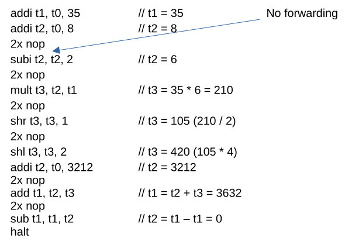
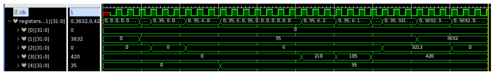
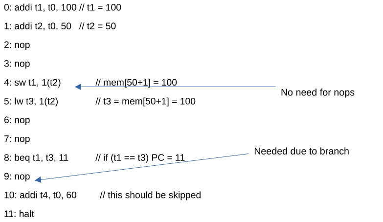
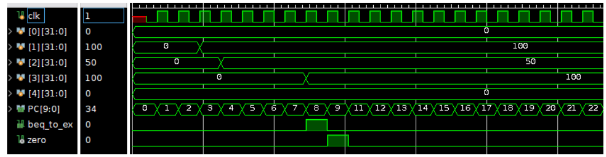
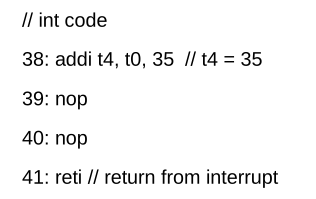
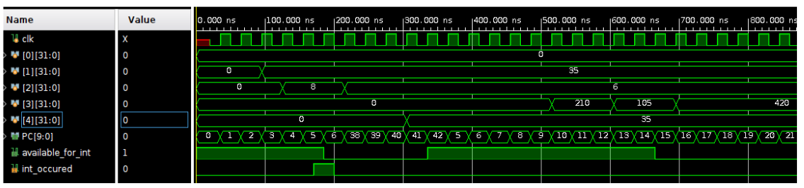
Simple SPI module. Set input bytes to SPI_mst and SPI_slv, pull Enable (CS) low and watch it work.
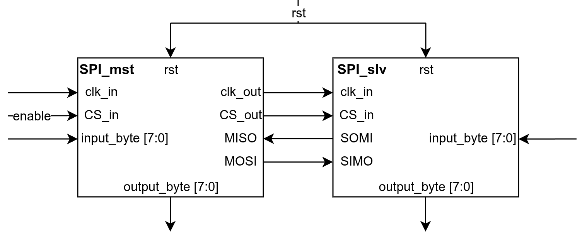
/*
* @brief SPI_mst module
* @input clk_in Clock provided by testbench
* @input rst Reset
* @input in_data[7:0] Input byte, to be transmitted
* @input MISO Input provided by SPI_slv
* @input CS_in CS_in (Enable) signal provided by testbench
* @output CS_out CS signal provided to SPI_slv
* @output MOSI SPI_mst serial output wire
* @output out_data[7:0] Byte sent by SPI_slv
* @output clk_out Clock signal provided to SPI_slv
*/
module SPI_mst(
input clk_in,
input rst,
input [7:0] in_data,
input MISO,
input CS_in,
output reg CS_out,
output reg MOSI,
output reg [7:0] out_data,
output reg clk_out
);
parameter IDLE = 0;
parameter TRANSMIT = 1;
reg [7:0] input_shift_reg;
reg [2:0] transmission_counter;
reg [1:0] state;
reg [1:0] next_state;
always @(posedge clk_in or posedge rst) begin
if (rst) begin
state <= IDLE;
end
else state <= next_state;
if (state == TRANSMIT) begin
MOSI <= input_shift_reg[7];
input_shift_reg <= {input_shift_reg[6:0], 1'b0};
out_data <= {out_data[6:0], MISO};
transmission_counter <= transmission_counter + 1;
end
else begin
MOSI <= 0;
input_shift_reg <= in_data;
transmission_counter <= 0;
end
end
always @(*) begin
case (state)
IDLE: begin
if (CS_in == 0) next_state = TRANSMIT;
else next_state = IDLE;
end
TRANSMIT: begin
if (transmission_counter == 8) next_state = IDLE;
else next_state = TRANSMIT;
end
endcase
end
always @(*) begin
CS_out = CS_in;
if (CS_in == 0) clk_out = clk_in;
else clk_out = 0;
end
endmodule
/*
* @brief SPI_slv module
* @input clk Clock provided by SPI_mst
* @input rst Reset
* @input in_data[7:0] Input byte, to be transmitted
* @input MOSI Input provided by SPI_mst
* @input CS CS (Enable) signal provided by SPI_mst
* @output MISO SPI_slv serial output wire
* @output out_data[7:0] Byte sent by SPI_slv
*/
module SPI_slv(
input rst,
input clk,
input CS,
input MOSI,
input [7:0] in_data,
output reg MISO,
output reg [7:0] out_data
);
parameter IDLE = 0;
parameter TRANSMIT = 1;
reg [1:0] state;
reg [3:0] transmission_counter;
reg [1:0] next_state;
reg [7:0] input_shift_reg;
always @(posedge rst or posedge clk) begin
if (rst) state <= IDLE;
else state <= next_state;
if (state == TRANSMIT) begin
MISO <= input_shift_reg[7];
input_shift_reg <= {input_shift_reg[6:0], 1'b0};
out_data <= {out_data[6:0], MOSI};
transmission_counter <= transmission_counter + 1;
end
else begin
MISO <= 0;
input_shift_reg <= in_data;
transmission_counter <= 0;
end
end
always @(*) begin
case (state)
IDLE: begin
if (CS == 0) next_state = TRANSMIT;
else next_state = IDLE;
end
TRANSMIT: begin
if (transmission_counter == 8) next_state = IDLE;
else next_state = TRANSMIT;
end
endcase
end
endmodule
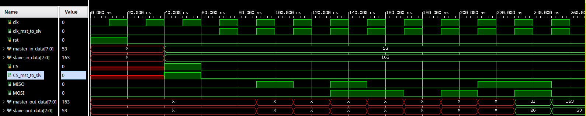